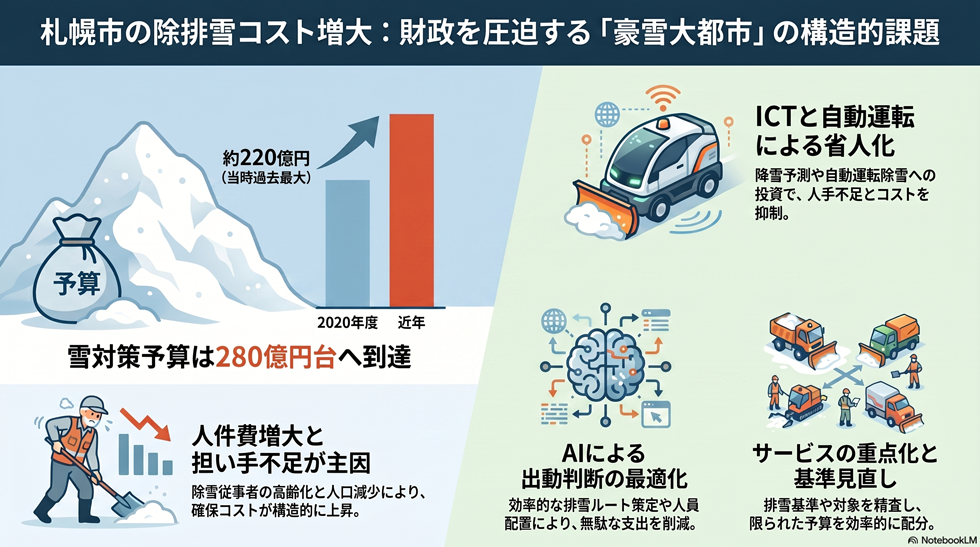

除排雪コストの増大
雪対策予算は年々膨らみ、財政を圧迫している。

背景
札幌は人口約196万人を抱えながら、年間の累積降雪量が約5メートルに達する世界でも例のない豪雪大都市である。道路網を冬季も維持するための除排雪は止められない固定費であり、天候だけでなく担い手確保のコスト上昇によっても予算が押し上げられる構造になっている。
主要データ
| 雪対策予算（近年） | 280億円台 |
|---|---|
| 過去最大を更新した年 | 2020年度（当時約220億円） |
事実
- 札幌市の雪対策予算は2020年度に約220億円で当時過去最大となり、その後も増加し、近年は280億円台に達している。
- 予算増の主因は人件費の増大で、除雪従事者の高齢化と人口減少が背景にある。
解釈
世界有数の豪雪大都市である札幌は、人口規模に対し雪処理の固定的負担が極めて大きい。コストは天候だけでなく担い手の確保コストにも左右され、構造的に上昇しやすい。
提案
- ICT・自動運転除雪などの省人化技術への投資（初期投資と効果検証のトレードオフ）。
- 排雪基準・福祉除雪の対象見直しによる重点化（市民サービス低下との緊張関係に注意）。
深掘り — 市民の声と答え
温暖化で暖かくなっているのに、雪は増えているの？ これからも増え続ける前提で備えるべき？
長期の総量は「減少」が予測です。札幌管区気象台・道総研の予測では、21世紀末に4℃上昇シナリオで北海道日本海側の年降雪量は約28%減少（2℃シナリオでは有意な変化なし）。観測でも年最深積雪・大雪の日は減少傾向です。ただし厳冬期の北海道はなお十分に寒く、温暖化で大気中の水蒸気が増えるため、短期間の『ドカ雪』のリスクはなくなりません。結論として、総量は減る前提でよい一方、極端な大雪への即応体制はむしろ強化して備えるのが妥当です。
人口減・高齢化で人件費が増えていると言うけれど、具体的にはどれくらい？
除雪オペレーターは半数が50歳超で、作業員数は年々減少し世代交代が進みません。確保のため労務単価の引き上げが毎年行われ、地域が費用を分担するパートナーシップ排雪の支払額（燃料費・人件費・機械経費で構成）も近年急騰しています。雪対策予算は2020年度の約220億円から近年は280億円台へ増え、増加の主因は人件費とされます。なお、市は単価の上昇率を一括では公表していないため、正確な数値は市資料での確認が必要です。
使っている重機はちゃんと減価償却されているの？ 古い機械を使い続けてコスト高になっていない？
除雪機械の多くは委託先の事業者が保有し、市は人件費・機械経費・燃料費を含む委託費（パートナーシップ排雪では地域支払額）として支払います。市単位での機械ごとの減価償却額は公表されていませんが、近年は『機械経費の高騰』が費用増の一因と説明されています。機械の確保・更新の難しさ自体が担い手不足と並ぶ課題で、正確な算定には市・事業者の内部資料が必要です（本サイトの推定の限界）。
機械さえあれば、若手が一時的に担う民間パートナーを作れないの？
方向性としては有効で、市も動いています。大型特殊免許の取得費用助成（上限4万円）などの担い手確保策に加え、『除雪業務の担い手不足の解消』を民間提案の募集テーマに掲げています。機械を市・事業者がそろえ、免許・研修を支援して若手やスポット人材が参入できる仕組み（機材プール＋育成・短期就労マッチング）は現実的な選択肢です。課題は、不規則な勤務時間と繁忙期の偏り、安全確保、機械の所有・保守コストで、ここをどう設計するかが鍵になります。
ロードヒーティングや融雪施設はどれくらい使われていて、止めているの？ 増やす予定は？
市はコストと環境の観点から、除雪回数の増加や凍結防止剤の散布など他の方法で安全を確保できる幹線道路の一部で、ロードヒーティングを計画的に停止しています（停止区間は年度ごとに公表）。一方で、下水処理水の熱などを使う融雪槽・流雪溝・地域密着型雪処理施設も整備。全体としては新設よりも、停止＋代替管理と融雪施設の活用にシフトする方向です。市全体の稼働箇所数・停止割合の集計値は市資料での確認が必要です。
今の排雪基準は何？ どうすれば圧縮できて、どれくらいの金額規模になる？
幹線道路の新雪除雪は降雪10cmが出動の目安です。排雪は幹線・通学路を1月頃から行い、生活道路は市と地域が費用を出し合うパートナーシップ排雪で実施します。排雪はコストが突出し、市の資料では『6車線道路1kmの除雪が1回約3万円に対し、排雪はその約80倍＝約240万円』とされます。圧縮の鍵は“排雪量そのものを減らす”ことで、雪押し・雪置き場の工夫、対象路線と頻度の重点化、融雪施設の活用、出動基準の運用最適化が効きます。排雪の対象・回数を見直すだけで億単位の影響が出うる規模ですが、具体の圧縮額は対象範囲しだいで、市の積算が必要です。
検討体制・メンバー
現状は札幌市建設局（雪対策室）が計画・予算を担っている。検討会には財政部局、除雪事業者・建設業団体、町内会など地域住民代表に加え、コスト分析の専門家、除雪機械メーカーや自動化技術の研究者を加えると、費用と省人化を両面から議論できる。
AIノート
AIの貢献度は中〜大。降雪予測と出動判断の最適化、排雪ルートの効率化、需要に応じた人員・機械配置でコスト削減が見込める。自動運転・遠隔操作除雪は担い手不足の緩和に直結しうるが、豪雪時の安全判断は当面人に残る。